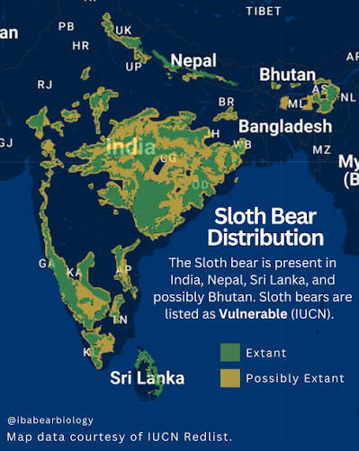
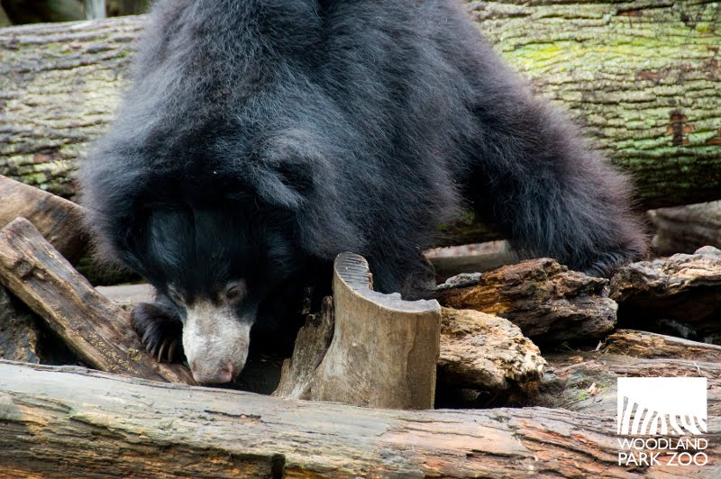

Basic Information
Common Name: Sloth Bear
Status/Conservation: Vulnerable [1]
Full Scientific Classification
| Taxonomic Rank | Classification |
|---|---|
| Kingdom | Animalia |
| Phylum | Chordata |
| Subphylum | Vertebrata |
| Class | Mammalia |
| Subclass | Theria |
| Order | Carnivora |
| Suborder | Caniformia |
| Family | Ursidae |
| Genus | Melursus |
| Species | M. ursinus |
Physical Profile
- Size Range
- Body length of 5 to 6 feet; shoulder height around 2 to 3 feet.
- Weight
- 120 to 310 lbs, with males being larger than females.
- Identification Markings
- Shaggy, dusty-black coat, a distinctive whitish or yellowish Y- or U-shaped mark on the chest, and long, curved claws. [2]
Habitat & Geography
Sloth bears are native to the Indian subcontinent, thriving in dry and moist forests, savannahs, and scrublands.
Distribution Map

Ecology & Behavior
Feeding and Diet
Sloth bears are myrmecophagous, meaning they specialize in eating insects. Their diet includes:
- Termites and ants
- Honey and honeycombs
- Various fruits and flowers
Life History Cycle
- Gestation & Birth: Pregnancy lasts about 6 to 7 months, usually resulting in 1 to 2 cubs.
- Cub Stage: Cubs ride on their mother's back for the first 9 months to stay safe from predators.
- Independence: Cubs stay with their mother for 1.5 to 2.5 years before setting off on their own. [3]
Communication & Adaptations
They have specially adapted lower lips that form a tube to vacuum up termites, creating a loud sucking noise that can be heard 100 meters away. They are highly vocal, using roars, squeals, and grunts.
Media & Supporting Visuals
